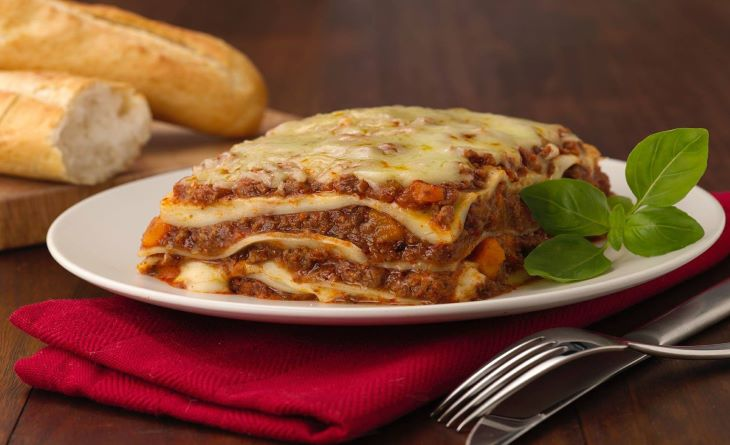
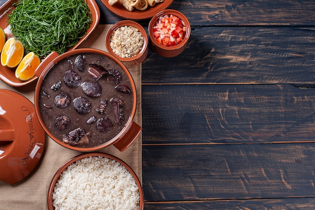
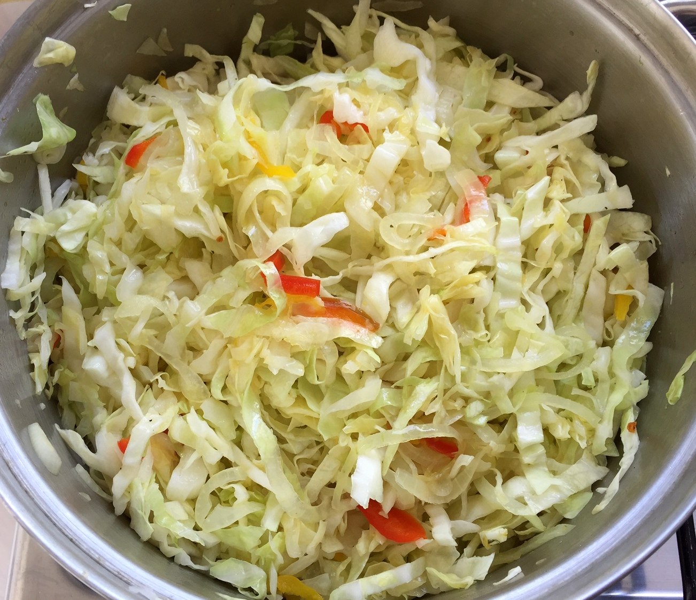

Lasanha
Lasanha é tanto um tipo de massa alimentícia formada por fitas largas
Quer saber mais? Clique na imagem e acesse:
Feijoada
Feijoada é uma designação comum dada a pratos da culinária de regiões e países lusófonos como Portugal, Brasil, Angola, Moçambique, Timor-Leste e Macau.
Quer saber mais? Clique na imagem e acesse:
Pizza

Pizza (também grafada piza em Portugal) é uma preparação culinária que consiste em um disco de massa fermentada de farinha de trigo, coberto com molho de tomate e os ingredientes variados que normalmente incluem algum tipo de queijo, carnes preparadas ou defumadas e ervas, normalmente orégano ou manjericão, tudo assado em forno.
Quer saber mais? Clique na imagem e acesse:

Frango com Quiabo

O prato é tradicional da culinária mineira e vem carregado de muita história. Sua origem remete ao século XIX, época em que o estado de Minas Gerais passava por dificuldades no transporte de mercadorias alimentícias provenientes de outros estados do país. Os ingredientes utilizados para essa receita eram facilmente encontrados no estado e a partir daí se popularizaram.
Quer saber mais? Clique na imagem e acesse:

Repolho refogado
Estudos de origem mostram que o repolho tenha sido domesticado no Mediterrâneo. Os romanos utilizaram as folhas de repolho primeiramente como erva medicinal, mas logo passou a ser reconhecido como alimento. Reconheceram-se os nômades Celtas como os responsáveis por distribuir o repolho para outras regiões do continente Europeu.